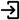
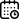
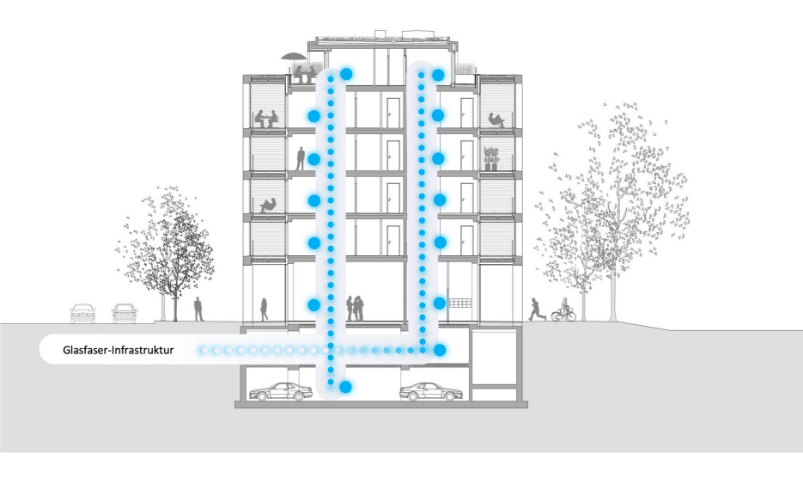
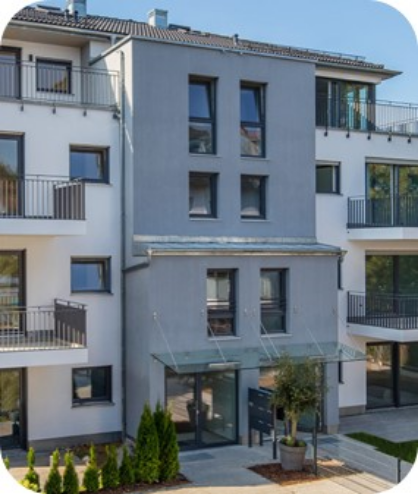
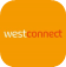
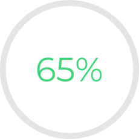
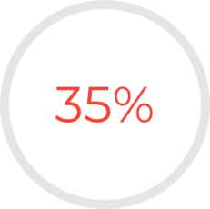
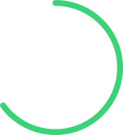

Eine Marke der
KSK Kabel- und Satelliten-
Kommunikation GmbH
Bültenweg 93
38106 Braunschweig
Tel. 0531 / 388 02 11
Fax 0531 / 388 02 19
Mail info@ksk-bs.de
www.kskdigital.de
KSK Kabel- und Satelliten-
Kommunikation GmbH
Bültenweg 93
38106 Braunschweig
Tel. 0531 / 388 02 11
Fax 0531 / 388 02 19
Mail info@ksk-bs.de
www.kskdigital.de
KSK-DIGITAL

Glasfaser
Smart Building
Dashboard
Termin vereinbaren
Login



kskdigital errichtet und betreibt seit mehr als
20 Jahren Infrastrukturen in Mehrfamilienhäusern.
Unsere Erfahrung und Innovationskraft setzen wir
gezielt ein, um die Gebäude unserer Kunden zum
leuchten zu bringen.
Wir setzen unsere Expertise nicht nur ein, um
Glasfasernetze (NE4) zu errichten.
Wir unterstützen Sie auch in der Ansprache,
Gewinnung und Betreuung von
Gebäudeeigentümern und Key Account Kunden.
20 Jahren Infrastrukturen in Mehrfamilienhäusern.
Unsere Erfahrung und Innovationskraft setzen wir
gezielt ein, um die Gebäude unserer Kunden zum
leuchten zu bringen.
Wir setzen unsere Expertise nicht nur ein, um
Glasfasernetze (NE4) zu errichten.
Wir unterstützen Sie auch in der Ansprache,
Gewinnung und Betreuung von
Gebäudeeigentümern und Key Account Kunden.
Wir bringen Glasfasernetze zum leuchten.
1
2
3
Für uns beginnt die Errichtung von
Glasfaser-Inhausnetzen durch eine
objektspezifische Begehung.
Auf dieser Basis erfolgt die Planung
hinsichtlich Material und
Umsetzung.
Ein weiterer wichtiger Schritt ist eine
klare Kommunikation, um die
Glasfaseraktivitäten anzukündigen.
Anschließend beginnen unsere
erfahrenen Monteure mit der
Installation einer zukunftsfähigen
Glasfaser-Infrastruktur und
dokumentieren die Ergebnisse.
Glasfaser-Inhausnetzen durch eine
objektspezifische Begehung.
Auf dieser Basis erfolgt die Planung
hinsichtlich Material und
Umsetzung.
Ein weiterer wichtiger Schritt ist eine
klare Kommunikation, um die
Glasfaseraktivitäten anzukündigen.
Anschließend beginnen unsere
erfahrenen Monteure mit der
Installation einer zukunftsfähigen
Glasfaser-Infrastruktur und
dokumentieren die Ergebnisse.
Glasfasernetze errichten
Glasfaser Vertrieb B2B
Wir unterstützen Glasfaser-Carrier
bei der Ansprache von Gebäude-
eigentümern von Mehrfamilien-
hausbeständen und wir begleiten
den Vertriebsporzess zur Einholung
von Gestattungsverträgen.
Relevant für die Ansprache ist eine
solide Datenbasis. Unser Recherche-
team ermittelt vor Ort Eigentümer-
daten und validiert weiterführende
Daten.
Unsere erfahrenen Key Account
Manager beraten und betreuen
Wohnungswirtschaften und
erarbeiten gemeinsame Glasfaser-
Strategien.
bei der Ansprache von Gebäude-
eigentümern von Mehrfamilien-
hausbeständen und wir begleiten
den Vertriebsporzess zur Einholung
von Gestattungsverträgen.
Relevant für die Ansprache ist eine
solide Datenbasis. Unser Recherche-
team ermittelt vor Ort Eigentümer-
daten und validiert weiterführende
Daten.
Unsere erfahrenen Key Account
Manager beraten und betreuen
Wohnungswirtschaften und
erarbeiten gemeinsame Glasfaser-
Strategien.
Glasfaser Expertise
Unsere Glasfaserwissen geben wir
gern weiter.
Sie benötigen ein B2B(2C)
Vertriebskonzept, dass abgestimmt
auf die unterschiedlichen
Eigentümer-Gruppen ist?
Wir erstellen technische und
prozessuale Konzepte auf Basis Ihrer
Anforderungen.
Dabei produzieren wir nicht nur
“Papier”, wir schulen auch Ihre
Mitarbeiter und begleiten Prozesse,
um die gesteckten Ziele zu erreichen.
Glasfaser trifft auf Leidenschaft.
gern weiter.
Sie benötigen ein B2B(2C)
Vertriebskonzept, dass abgestimmt
auf die unterschiedlichen
Eigentümer-Gruppen ist?
Wir erstellen technische und
prozessuale Konzepte auf Basis Ihrer
Anforderungen.
Dabei produzieren wir nicht nur
“Papier”, wir schulen auch Ihre
Mitarbeiter und begleiten Prozesse,
um die gesteckten Ziele zu erreichen.
Glasfaser trifft auf Leidenschaft.
Glasfaser-Power
schnell, sicher, zuverlässig
schnell, sicher, zuverlässig
kskdigital verbindet Expertise und
Innovation, um die Infrastruktur der
Zukunft zu gestalten.
Als Spezialisten in Planung, Installation
und Betrieb haben wir den Anspruch, mit
fortschrittlichen und nachhaltigen
Lösungen Kundenerwartungen zu
übertreffen, um eine nachhaltige und
vernetzte Welt zu gestalten.

Innovation, um die Infrastruktur der
Zukunft zu gestalten.
Als Spezialisten in Planung, Installation
und Betrieb haben wir den Anspruch, mit
fortschrittlichen und nachhaltigen
Lösungen Kundenerwartungen zu
übertreffen, um eine nachhaltige und
vernetzte Welt zu gestalten.
Für Ihre digitale
Zukunftgerüstet
Zukunftgerüstet
Wir bieten nicht nur erstklassige Beratung, sondern
realisieren auch den gesamten Prozess bis in Ihre
eigenen vier Wände – angefangen beim fundierten
Gespräch über Ihre Bedürfnisse bis hin zum
präzisen Tiefbau. Erfahren Sie, wie wir individuelle
Glasfaserverbindungen schaffen und modernste
Technologien direkt in Ihr Zuhause bringen.
realisieren auch den gesamten Prozess bis in Ihre
eigenen vier Wände – angefangen beim fundierten
Gespräch über Ihre Bedürfnisse bis hin zum
präzisen Tiefbau. Erfahren Sie, wie wir individuelle
Glasfaserverbindungen schaffen und modernste
Technologien direkt in Ihr Zuhause bringen.
Unsere Experten
sorgen für
zukunftsfähige
Netze.
sorgen für
zukunftsfähige
Netze.
Wir bringen den
Glasfaseranschluss bis
in jede Wohnung.
Glasfaseranschluss bis
in jede Wohnung.
Was unsere Kunden über uns sagen.
Jens Bischoff. Geschäftsführer
Wohnbau Salzgitter
Wohnbau Salzgitter
Seit vielen Jahren vertrauen wir auf die Komptenz
und Zuverlässigkeit der kskdigital. Als regionaler
Ansprechpartner betreut uns das Team der
kskdigital in den technischen Belangen rund um
unsere Multimediaversorgung. Insbesondere die
direkte und reibungslose Abwicklung sind für uns
im operativen Geschäft wichtig.
und Zuverlässigkeit der kskdigital. Als regionaler
Ansprechpartner betreut uns das Team der
kskdigital in den technischen Belangen rund um
unsere Multimediaversorgung. Insbesondere die
direkte und reibungslose Abwicklung sind für uns
im operativen Geschäft wichtig.
Silke Pförtner, Bereichsleitung Techn.
Management >Wiederaufbau< eG
Management >Wiederaufbau< eG
Für uns als einer der größten Baugenossenschaft in
Norddeutschland ist eine zukunftssichere
Glasfaserversorgung unserer Bestände wichtig. Mit der
kskdigital haben wir einen zentralen Dienstleister
gefunden, der den Glasfaserausbau in unseren Beständen
nach unseren Wünschen und Vorgaben errichtet. Das
Zusammenspiel zwischen unserem Vertragspartner,
kskdigital und ist ausschlagend für eine erfolgreiche
Umsetzung.
Norddeutschland ist eine zukunftssichere
Glasfaserversorgung unserer Bestände wichtig. Mit der
kskdigital haben wir einen zentralen Dienstleister
gefunden, der den Glasfaserausbau in unseren Beständen
nach unseren Wünschen und Vorgaben errichtet. Das
Zusammenspiel zwischen unserem Vertragspartner,
kskdigital und ist ausschlagend für eine erfolgreiche
Umsetzung.
Martin Ertl, Geschäftsführer
Stadtwerke Rödental
Stadtwerke Rödental
Auf der Suche nach einem erfahrenen Baupartner für unseren Glasfaserausbau in Rödental, haben wir mit der kskdigitak einen kompetenten und flexiblen Geschäftspartner gefunden. Dabei haben wir von Anfang eine vertrauensvolle und übergreifende Zusammenarbeit erlebt, die wir sehr schätzen gelernt haben. Wir sind sehr zufrieden mit den erbrachten Leistungen und freuen uns weiterhin auf die Zusammenarbeit.

Jennifer Schönhoff, Vertriebsleiterin
Wohungswirtschaft Westconnect
Wohungswirtschaft Westconnect
Als einer der ersten B2B-Vertriebspartner unterstützt uns das kskdigital-Team, rund um Stefan Kühne, auf unserer Glasfaserreise. Wir erleben einen engagierten, mitdenkenden und erfolgreichen Partner, der gemeinsam mit uns im Bereich der Wohnungswirtschaft aktiv ist.
Aktuelle Zahlen aus dem Markt.
Die Glasfasertechnologie bildet die Basis der Digitalisierung Deutschlands, da aktuell kein Medium mehr Datensätze übertragen kann. Wir helfen Deutschland die gesetzten Ziele der Gigabitstrategie der Bundesregierung mit unseren Ressourcen, unserer Technologie, den digitalen Prozessen und der neusten Software zu erreichen.



aller deutschen Haushalte verfügen über einen Glasfaseranschluss mit einer Downstream-Geschwindigkeit von 1000 Mbit/s. (FTTB/H).
der Deutschen würden einen Glasfaseranschluss nutzen, sofern es die Möglichkeit gibt.
der Tk-Unternehmen haben eine hohe Nachhaltigkeitspriorität und setzen entsprechende Maßnahmen um.
© 2024 erstellt durch KSKDIGITAL - persönlich, regional, zuverlässig.
Impressum und Datenschutz